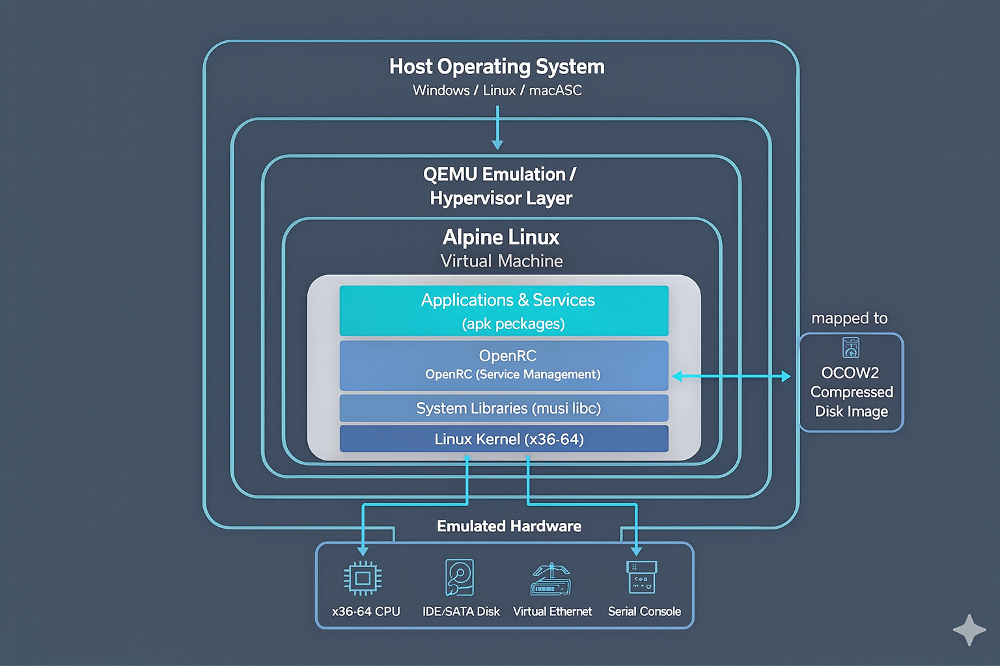

Architecture & Technical Details - My Linux Environment
In-depth technical documentation of the QEMU Alpine Linux environment architecture, design decisions, and implementation details.
Table of Contents
- System Architecture
- QEMU Emulation
- Alpine Linux Configuration
- Boot Process
- File System Layout
- Networking Architecture
- Resource Management
- Library Dependencies
- Performance Considerations
- Security Architecture
System Architecture
Overall Design

Design Philosophy
- Self-Contained - All components in one directory, no system dependencies
- Portable - Works on USB drives, cloud storage, across systems
- Minimal - Only essential components included
- Isolated - VM completely sandboxed from host
- Fast - Hardware acceleration when available
QEMU Emulation
What is QEMU?
QEMU (Quick Emulator) is an open-source machine emulator that can: - Emulate CPUs and hardware devices - Virtualize with hardware acceleration (WHPX, KVM, HVF) - Translate instructions between architectures - Manage virtual machine lifecycle
Emulation vs Virtualization
| Aspect | Emulation | Virtualization |
|---|---|---|
| Speed | Slower (translates instructions) | Faster (native execution) |
| Compatibility | Very broad (cross-arch) | Requires same arch |
| Overhead | High (software translation) | Low (hardware assisted) |
| Use Case | Learning, testing | Production |
This Setup: Primarily emulation with HW acceleration available
QEMU Configuration
From start_linux.bat:
qemu-system-x86_64.exe ^
-m 512M # Memory allocation
-hda alpine_disk.qcow2 # Disk image (hda = first IDE drive)
-boot c # Boot from disk (c = disk, a = floppy)
-serial tcp::4444,server,nowait # Serial port 1: TCP server
-serial stdio # Serial port 2: STDIO (console)QEMU Components
QEMU Executable: qemu-system-x86_64.exe
- Main emulator binary - Implements x86-64 emulation - Size: ~15MB
Supporting Libraries (150+ DLLs): - Graphics: GTK, Cairo, Pixman, Epoxy - Audio: Jack, PulseAudio support - Media: GStreamer, libavif, libwebp, libopus, libaom - Compression: zlib, bzip2, lzma, lz4, brotli - Cryptography: OpenSSL, GnuTLS, Nettle - Display: DRI, GBM, Vulkan support
Alpine Linux Configuration
Alpine Linux Characteristics
Size: - Core: ~5MB - This image: ~500MB+ (QCOW2 compressed) - Uncompressed: ~2-3GB typical
Architecture:
musl libc (C standard library)
↓
OpenRC (init and service manager)
↓
BusyBox (compact Unix utilities)
↓
APK (package manager)Key Differences: - Uses musl libc instead of glibc (smaller, more secure) - Uses OpenRC for service management (not systemd) - Includes BusyBox for compact utilities - Minimalist philosophy (no GUI, minimal tools)
Image Format: QCOW2
QCOW2 (QEMU Copy-On-Write version 2):
Advantages:
✓ Compression support (reduces disk usage)
✓ Sparse allocation (grows as needed)
✓ Snapshots (save/restore VM state)
✓ Encryption (protect VM data)
✓ Backing files (layered images)
Disadvantages:
✗ Slower than raw images
✗ More CPU usage
✗ Complex format (data recovery harder)File Structure:
alpine_disk.qcow2
├── Header (metadata, version info)
├── L1 table (cluster references)
├── L2 tables (data location pointers)
├── Data clusters (actual VM disk content)
└── Snapshots (if any exist)Alpine Package Manager (apk)
APK Architecture:
Repository (index)
↓
Package (.apk file = tar.gz + metadata)
↓
Installed packages (/var/lib/apk/installed)
↓
File system integration (/usr, /etc, etc)How apk Works: 1. Downloads .apk files
(compressed tar archives) 2. Verifies signatures and integrity 3.
Extracts to filesystem 4. Records in /var/lib/apk/installed
5. Runs post-install scripts if needed
Boot Process
Complete Boot Sequence
1. QEMU Initialization
├─ Load QEMU configuration
├─ Initialize emulated hardware
├─ Allocate 512MB virtual RAM
└─ Map disk image to SATA controller
2. BIOS/UEFI Emulation
├─ Power-on self test (POST)
├─ Scan for bootable devices
└─ Find and load boot sector
3. Bootloader
├─ GRUB or LILO reads MBR
├─ Loads kernel from disk
└─ Passes kernel parameters
4. Linux Kernel Boot
├─ Kernel initialization
├─ Detect virtual hardware
├─ Initialize filesystems
├─ Mount root filesystem
└─ Prepare for init process
5. Init System (OpenRC)
├─ Load configuration
├─ Execute /etc/init.d/rcS
├─ Start default services
└─ Present login prompt
6. Login Shell
├─ Prompt for credentials
├─ Authenticate user
└─ Start shell sessionBoot Parameters Analysis
From the startup scripts:
-m 512M
└─ Allocates 512MB RAM to VM
└─ Sufficient for Alpine + development
-hda alpine_disk.qcow2
└─ Maps alpine_disk.qcow2 as IDE drive 0 (hda)
└─ QEMU interprets QCOW2 format
-boot c
└─ Boot order: c (disk), a (floppy), d (CDROM), n (network)
└─ 'c' means boot from first disk
-serial tcp::4444,server,nowait # Windows only
└─ Create TCP server on port 4444
└─ Allows remote serial console access
└─ 'nowait' means don't wait for connection
-serial stdio # Windows & Linux
└─ Serial port connected to STDOUT/STDIN
└─ Allows console interaction through terminalFile System Layout
Disk Image Organization
alpine_disk.qcow2 (compressed virtual disk)
↓
Partitions:
├─ /dev/hda1 - boot partition (256MB typically)
│ ├─ /boot/vmlinuz-* (Linux kernel)
│ ├─ /boot/initramfs-* (init RAM filesystem)
│ └─ /boot/grub/ (bootloader config)
│
└─ /dev/hda2 - root filesystem (remaining space)
├─ / (root)
├─ /etc/ (configuration)
├─ /var/ (variable data, logs)
├─ /usr/ (user programs, libraries)
├─ /tmp/ (temporary files)
├─ /root/ (root home)
└─ /home/ (user homes)Important Alpine Directories
/etc/apk/
├─ repositories # Package repositories URLs
├─ installed # List of installed packages
└─ keys/ # GPG keys for package verification
/var/lib/apk/
└─ cache/ # Downloaded packages cache
/usr/local/
└─ (user-installed software location)
/opt/
└─ (optional software location)
/var/log/
├─ messages # System messages
├─ auth.log # Authentication log
└─ * # Various service logsNetworking Architecture
Default Network Configuration
Current Setup: No networking configured
Network: Disabled (isolated VM)
Serial: Used for console onlyIf Networking Were Enabled
Host Machine Network
↓
Virtual Network Interface (NAT or Bridge)
↓
QEMU User Mode Network (default)
├─ eth0: Virtual Ethernet to host
├─ DNS: Host's DNS servers
└─ DHCP: Auto IP assignment
↓
Alpine VMNetwork Parameters
# Add to enable networking:
-net user # NAT networking
-net nic,model=virtio # Virtual NIC
# Results in:
- Automatic IP assignment (via DHCP)
- DNS resolution through host
- Outgoing connections allowed
- Incoming connections blocked (NAT)Serial Console Architecture
Host Terminal (STDOUT/STDIN)
↓
QEMU Serial Port 0 (-serial stdio)
↓
Virtual Serial Device (/dev/ttyS0)
↓
Alpine Linux ConsoleResource Management
Memory Architecture
Total System RAM
├─ Host OS: ~2-3GB
├─ QEMU Process: ~50-100MB
│ ├─ Emulation overhead
│ └─ Memory translation tables
│
├─ Alpine VM: 512MB (allocated)
│ ├─ Kernel: ~30MB
│ ├─ Processes: ~10-50MB
│ ├─ Filesystem cache: ~100MB
│ └─ Available: ~300-400MB
│
└─ Remaining: Available for hostMemory Optimization
Current Config (Conservative): - 512MB allocated to VM - Suitable for learning, development - Leaves host with sufficient RAM
For Larger Workloads:
REM Increase to 1GB
-m 1024M
REM Increase to 2GB
-m 2048MNote: Don’t allocate more than host’s total memory
Disk Usage
alpine_disk.qcow2
├─ Compressed size: ~500MB
├─ Uncompressed size: ~2-3GB
└─ After apk install: Grows as needed
Best Practice:
- Keep 1GB+ free disk space on host
- QCOW2 grows dynamically
- Monitor with: df -hCPU Allocation
Current Config:
All host CPUs available to VM
(QEMU uses host's CPU thread pool)Limiting CPU (if needed):
# Use only 1 CPU core
-smp 1
# Use 2 CPU cores
-smp 2
# Use 4 cores with host acceleration
-smp 4,accel=whpxLibrary Dependencies
Critical QEMU Libraries
Graphics System:
GTK3 (graphical toolkit)
├─ Cairo (2D graphics)
├─ Pixman (pixel manipulation)
├─ Pango (text layout)
├─ HarfBuzz (text shaping)
└─ Freedesktop librariesCompression Formats:
zlib (ZIP compression)
bzip2 (BZIP2 compression)
lzma/xz (LZMA compression)
lz4 (LZ4 compression)
brotli (Brotli compression)Cryptography:
OpenSSL (SSL/TLS)
├─ libcrypto
└─ libssl
GnuTLS (alternative TLS)
Nettle (cryptographic primitives)
Tasn1 (ASN.1 parsing)Media:
GStreamer (multimedia framework)
├─ Codecs (audio/video)
├─ Plugins
└─ Pipelines
Image formats:
├─ libjpeg (JPEG)
├─ libpng (PNG)
├─ libtiff (TIFF)
├─ libwebp (WebP)
├─ libavif (AVIF)
└─ libjxl (JPEG XL)System Libraries:
glib (core utilities)
├─ gmodule
├─ gobject
└─ gio
musl libc (C standard library)
libssp (stack smashing protector)Library Load Order
QEMU Process Start
↓
1. Load musl libc (core C library)
2. Load glib (utilities)
3. Load GTK (graphics)
4. Load compression libraries
5. Load cryptography libraries
6. Load media libraries
7. Initialize emulation engine
8. Load kernel and boot VMPerformance Considerations
Emulation Overhead
Native CPU (Host): 1x performance
Hardware Virtualization: ~0.95x (5% overhead)
QEMU Emulation: ~0.3-0.5x (50-70% overhead)
Reality for Alpine Linux:
- Minimal OS = less impact
- Simple operations = fast
- Memory access = reasonably fast
- I/O operations = slightly slowerOptimization Strategies
1. Hardware Acceleration
# Windows (already enabled)
-accel whpx,kernel-irqchip=off
# Linux
-enable-kvm
-accel kvm
# macOS (Apple Silicon)
-accel hvf2. Disk Optimization
# Use virtio (faster than IDE)
-drive file=disk.qcow2,format=qcow2,if=virtio
# Disable disk cache synchronization (risky!)
-drive file=disk.qcow2,cache=unsafe3. CPU Optimization
# Enable all CPU flags
-cpu host
# Multi-core allocation
-smp 4Benchmarking
Quick performance test:
# Run inside Alpine
time dd if=/dev/zero of=/tmp/test bs=1M count=100
# CPU test
time cat /proc/cpuinfo | wc -l
# Memory speed
time find / -type f | wc -lSecurity Architecture
VM Isolation
Host Security Boundary
↓
QEMU Process (sandboxed)
↓
Virtual Hardware (emulated)
↓
Alpine VM (completely isolated)Guarantees: - VM cannot access host filesystem directly - VM has no access to host hardware - VM process runs as unprivileged user (recommended) - Serial console only communication
Alpine Linux Security
Hardened by Default:
✓ No unnecessary services running
✓ Minimal attack surface
✓ musl libc (more secure than glibc)
✓ SELinux support (if installed)
✓ Signed packages (GPG verification)Additional Security:
# Enable firewall
apk add awall
rc-service awall start
# User accounts
# Use restricted user instead of root
adduser -D -s /bin/sh appuserNetwork Security
Current Setup: Safe - No network enabled - Completely isolated - No external access
If Network Enabled: Add caution
# Enable firewall before networking
apk add iptables
iptables -A INPUT -m state --state ESTABLISHED,RELATED -j ACCEPT
iptables -A INPUT -j DROPQEMU Security Features
-sandbox on,obsolete=off # Enable sandbox mode
-runas user # Run as specific user
-chardev socket,... # Encrypted console
-tls-creds-x509 # TLS encryptionFile System Performance
QCOW2 vs Raw Images
QCOW2 Format (current):
Pros:
✓ Small size (~500MB vs ~3GB raw)
✓ Snapshots supported
✓ Compression
✓ Sparse allocation
Cons:
✗ Slower I/O
✗ Higher CPU usage
✗ Fragmentation over time
Raw Format:
Pros:
✓ Fast I/O
✓ Low CPU overhead
✓ Simple format
Cons:
✗ Large disk size
✗ No snapshots
✗ No compressionRecommended Workflows
For Learning: - Current setup is optimal - QCOW2 compression saves space
For Performance:
# Convert to raw (if disk space available)
qemu-img convert -f qcow2 -O raw alpine_disk.qcow2 alpine_disk.raw
# Update start scripts to use .raw fileFor Backup/Distribution: - Keep QCOW2 format - Small size, easy to copy - Compresses well in archives
Advanced Topics
Snapshot Management
# Create snapshot
qemu-img snapshot -c mybackup alpine_disk.qcow2
# List snapshots
qemu-img snapshot -l alpine_disk.qcow2
# Apply snapshot
qemu-img snapshot -a mybackup alpine_disk.qcow2
# Delete snapshot
qemu-img snapshot -d mybackup alpine_disk.qcow2Disk Cloning
# Create independent copy
qemu-img convert -O qcow2 alpine_disk.qcow2 alpine_disk_copy.qcow2
# This creates:
- Independent copy (changes don't affect original)
- Same compressed size
- Can have different lifecyclePerformance Profiling
# Monitor QEMU process
top -p $(pgrep qemu-system)
# Monitor disk I/O
iotop -p $(pgrep qemu-system)
# Monitor network (if enabled)
nethogsArchitecture Summary
This environment combines:
- Host OS - Any major operating system
- QEMU - Open-source emulator with HW acceleration
- Alpine Linux - Minimal, efficient Linux distribution
- QCOW2 - Compressed virtual disk format
- OpenRC - Lightweight service management
Result: A complete, portable, self-contained Linux environment suitable for learning, development, and experimentation.
References: - QEMU Documentation: https://www.qemu.org/documentation/ - Alpine Linux Wiki: https://wiki.alpinelinux.org/ - QCOW2 Specification: https://github.com/qemu/qemu/blob/master/docs/interop/qcow2.txt - Linux Kernel Boot: https://www.kernel.org/doc/html/latest/
Last Updated: July 30, 2025